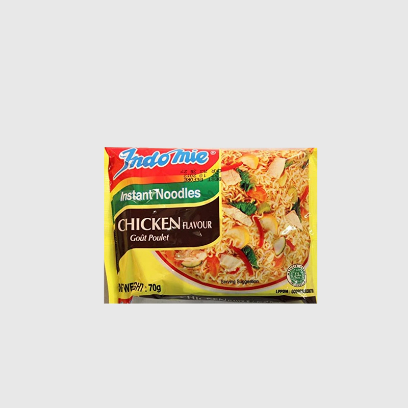
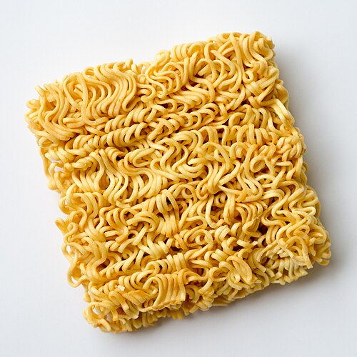
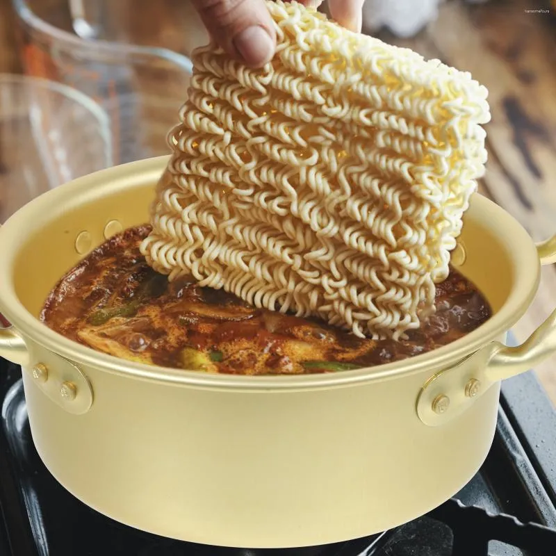

INDOMIE RECIPE




Get ready for a flavor explosion!
We're making a simple yet mouth-watering Nigerian-style instant noodles recipe,
perfect for a quick lunch or dinner.
With just a few ingredients and 10 minutes of your time,
you'll be enjoying a delicious, spicy noodle dish that'll satisfy your cravings!
Prep time:
15-20mins
Cook time:
10-15mins
Servings:
1 person
Difficulty:
Very easy to make
INGREDIENTS
- 1 packet of instant noodles
- 1 medium tomato, chopped
- 1 medium tomato, chopped
- 1 scotch bonnet pepper (or any hot pepper of your choice), chopped
- 1 tablespoon of vegetable oil
- 1 teaspoon of curry powder
- Salt and seasoning to taste
- Protein of your choice (e.g., sausage, chicken, or shrimp)
INSTRUCTIONS
- Boil the noodles according to package instructions.
Drain and set aside.
- Heat oil in a pan and sauté the onion, tomato,
and scotch bonnet pepper until softened
- Add curry powder and stir for 1 minute.
- Add the cooked noodles, salt, and seasoning.
Stir-fry for 2-3 minutes.
- Serve hot and enjoy!
NUTRITION FACTS
Per serving (assuming 1 packet of noodles)
- Calories: 400-500
- Protein: 10-15g
- Fat: 15-20g
- Carbohydrates: 50-60g
- Fiber: 2-3g
- Sodium: 1000-1500mg
- Sugar: 1-2g